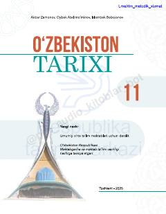

OT11-sinf o'quvchilari uchun O'zbekistonning mustaqillik davri tarixiga oid darslik.
Ushbu darslik umumiy o'rta ta'lim maktablarining 11-sinf o'quvchilari uchun mo'ljallangan bo'lib, O'zbekistonning mustaqillik davri tarixi, davlat boshqaruvi, iqtisodiy islohotlar va ijtimoiy siyosatni qamrab oladi. Kitobda milliy davlatchilikning tiklanishi, ta'lim va ilm-fan sohasidagi yutuqlar hamda jamiyatning rivojlanish bosqichlari batafsil yoritilgan.